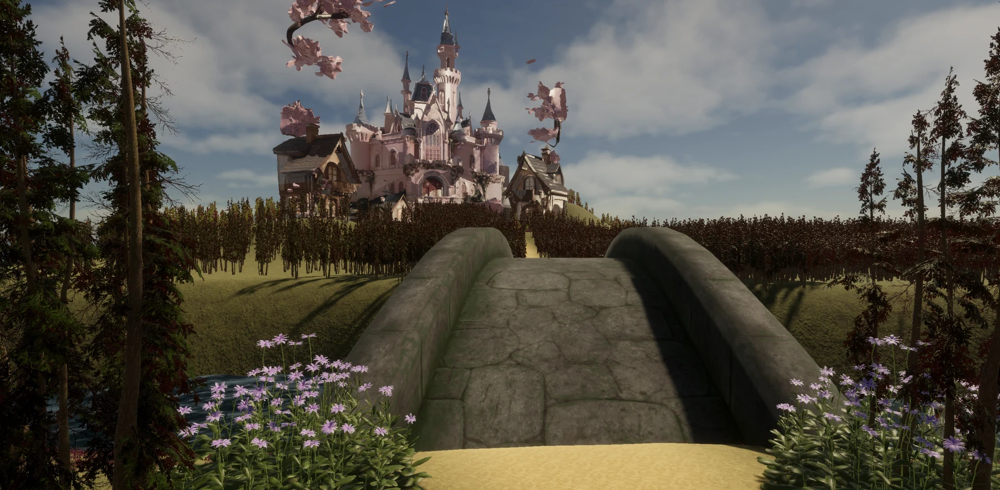
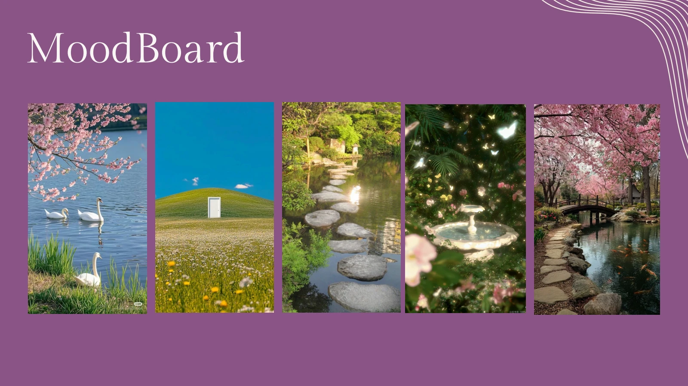
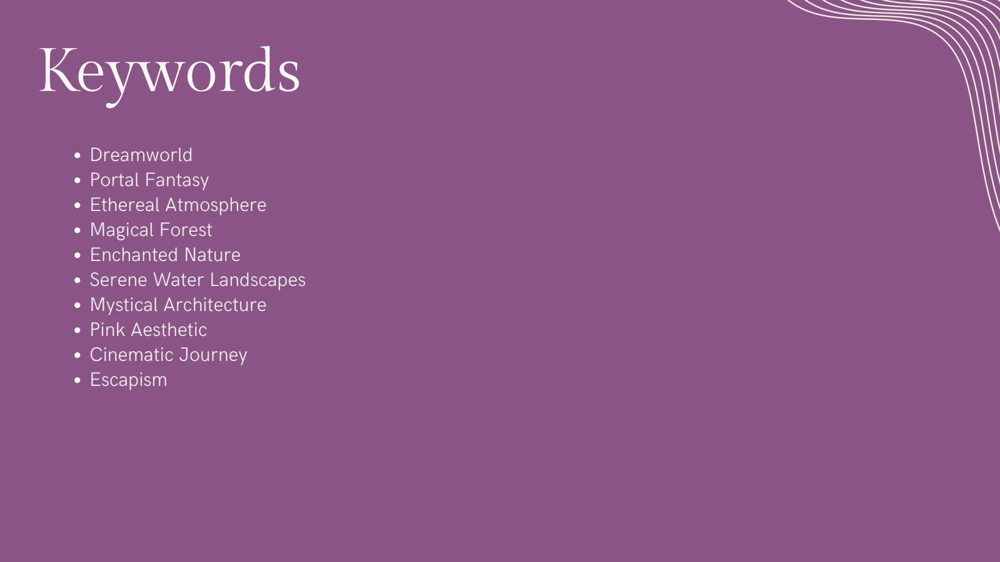
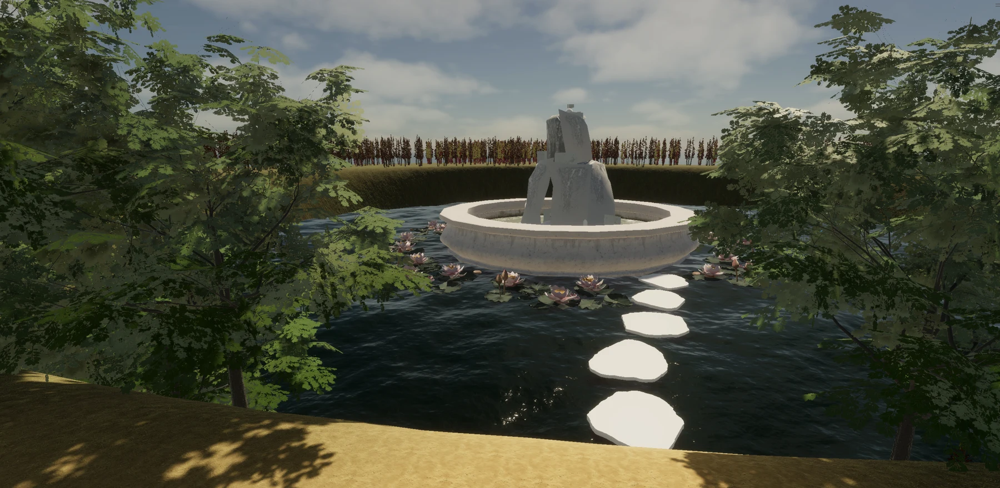

A sense of transition
Portals structure the journey into the imagined space.
Expanded Reality module
A cinematic environment exploring a transition from the everyday into a calm, imagined world.

01 · THE CHALLENGE
The project asks how a digital environment can evoke serenity and wonder. It uses doors as symbolic portals into a dreamlike landscape of forests, water, and fantasy architecture.
PROJECT GOALCreate an atmospheric journey that invites slow exploration.
02 · UNDERSTANDING

The concept connects natural elements with fantasy through a consistent emotional direction: softness, calm, and curiosity.
03 · EXPLORATION

The process moves from moodboard and terrain shaping to trees, water, environmental details, and a cinematic sequence.
04 · FINAL SOLUTION

Portals structure the journey into the imagined space.
Forest and water elements establish the setting.
The sequence guides attention through the environment.
WANT THE DETAILS?
Explore the original university presentation and supporting process.
View presentation ↗05 · REFLECTION
The delivered work includes a Unity scene, a video, and a process presentation. It explores how environment, camera movement, and visual atmosphere can shape an experience.